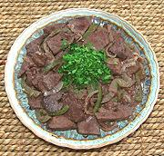

|
Liver Italian StyleCuba - Higado a la Italiana | ||||
| Serves: Effort: Sched: DoAhead: |
4 main *** 3-1/4 hr Prep |
This popular Cuban dish does not actually much resemble anything made in Italy - it is closer to Spanish liver recipes. It's a very good recipe for anyone who doesn't hate liver - and might make converts. | |||
|
|
1-1/2 ------- 2 1/2 1/4 1/4 1/4 1 1 ------- 8 7 3 ------- ar |
# --- t t t c c T --- oz oz T --- |
Liver (1) -- Marinade Garlic Salt Pepper Wine Vinegar, red Sherry, dry (2) Flour Bay Leaf --------- Onion Bell Pepper, green Olive Oil -- Garnish Parsley (flat) |
Prep - (2-1/2 hrs - 25 min work)
|
rmm_livita1 190323 mock141 - www.clovegarden.com
©Andrew Grygus - agryg@aaxnet.com - Linking to and
non-commercial use of this page is permitted.